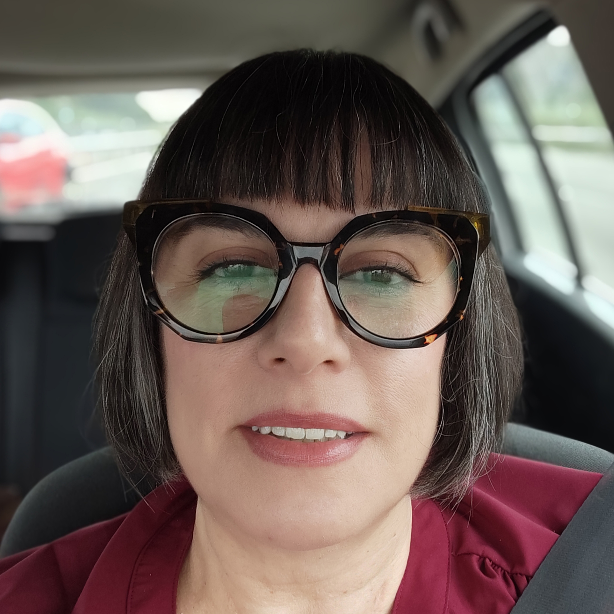

Me como la sopa de letras por orden alfabético.
Enseño a trabajar con arcilla polimérica y resina.
Hago cosas y tengo un canal de YouTube.

Ana Belchí es una artesana y profesora de joyería contemporánea que lleva más de 25 años explorando las posibilidades de la arcilla polimérica. Sus inicios estuvieron ligados al diseño de joyas, creando piezas que llegaron a desfilar en algunas de las pasarelas más prestigiosas de España.
En 2007 decidió dar un giro a su carrera para dedicarse a la enseñanza, descubriendo en ella un espacio donde compartir conocimiento y despertar la creatividad de otros. Desde entonces, ha acompañado a alumnos de todo el mundo a través de talleres presenciales y online, desarrollando un estilo de enseñanza fresco y divertido, donde la técnica se combina con la teoría del color, el diseño y el impulso creativo.
Tras un periodo reciente de reflexión profesional, en el que dio un paso atrás para replantear su manera de enseñar, Ana ha redefinido su enfoque pedagógico. Este proceso le ha permitido adaptar sus contenidos a las necesidades reales del alumnado, apostando por una enseñanza más práctica, clara y aplicable.
Porque, como ella misma asegura, no es tan feliz como cuando se sienta a dar clase.
Datos de contacto